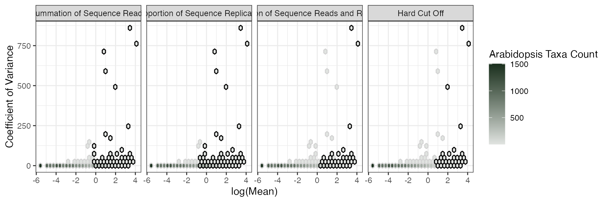

Introduction
We include two datasets with the package. One of which is the Arabidopsis dataset derived from Lundberg et al. 2012. The dataset included is a subset of the entire core Arabidopsis thaliana root microbiome dataset. We utilized only the rhizosphere samples from the M21 site.
arabidopsisData Structure
By default {coremicro} assumes your data is in a wide format:
| X | site_1 | site_2 |
|---|---|---|
| OTU_1 | 0 | 20 |
| OTU_2 | 10 | 1 |
| OTU_3 | 20 | 20 |
Where the first column is your taxa names, and all subsequent columns are numeric containing your taxa counts. If your data is in long format you can set taxa_as_rows = FALSE
Mean, Variance, Covariance
The summarize_taxa function can be used to calculate the mean Mean, variance Variance, and coefficient of variance CV, for each taxa in the dataset:
summarise_taxa(arabidopsis)## # A tibble: 14,890 x 4
## X Mean Variance CV
## <chr> <dbl> <dbl> <dbl>
## 1 OTU_100 0.368 0.707 1.92
## 2 OTU_1000 0.00694 0.00692 0.997
## 3 OTU_10000 0.698 5.85 8.38
## 4 OTU_10002 0.260 0.284 1.09
## 5 OTU_10003 0.00694 0.00692 0.997
## 6 OTU_10006 0.146 0.160 1.10
## 7 OTU_10007 0.00694 0.00692 0.997
## 8 OTU_10008 0.0451 0.0502 1.11
## 9 OTU_1001 0.0694 0.128 1.84
## 10 OTU_10011 0.861 5.30 6.16
## # … with 14,880 more rowsSingle Methods
We can use the built in arabidopsis dataset to look at each of the core methods included in the package thusfar:
Hard Cutoff
This method assigns taxa to the core if they are present in more than a pre-determined number of sites. The default threshhold is 25 counts in at least 5 sites, you can change these two parameters using the cutoff and site arguments
hard_cutoff(arabidopsis, cutoff = 25, sites = 5)Summation of Sequence Reads
This method assigns taxa to the core if they are in the top X% of reads. Taxa are ranked in abundance and the cumulative sum is recorded. Any taxa which appears before some cutoff percentage is included in the core. The default is for taxa to be assigned to the core if they account for the first 75% of the reads. You can change this using the nreads argument
abundance_core(arabidopsis, nreads = 0.75)Proportion of Sequence Replicates
This method assigns taxa to the core if they account for some proportion of the total reads for the sequencing run. As a default, taxa must be present in at least 50% of sites:
occupancy_core(arabidopsis, occupancy_core = 0.5)Proportion of Sequence Reads and Replicates
This method assigns taxa to the core if they account for some proportion of the total reads for the sequencing run and if they are present in at least x% of the total number of replicates. In this example, a core taxa must account for 0.02% of the total reads for the entire otu table and be present in at least 50% of sites.
abundance_and_occupancy_core(arabidopsis, occupancy_core = 0.5, prop_reads = 0.0002)We encourage collaboration – please submit a PR or issue if you’d like to see more methods included in the package!
All Methods
Rather than look at each method in isolation, we can use the main function of the package: combine_methods. This function prints your taxa table and a logical column for each method if that taxa is included in the column’s method. It also adds the class core_methods to your dataset so it can be used in subsequent plotting:
(
combine_arab <- core_methods(arabidopsis)
)## # A tibble: 59,560 x 6
## X Mean Variance CV name value
## <chr> <dbl> <dbl> <dbl> <fct> <dbl>
## 1 OTU_100 0.368 0.707 1.92 Summation of Sequence Reads 0
## 2 OTU_100 0.368 0.707 1.92 Proportion of Sequence Reads and Repl… 0
## 3 OTU_100 0.368 0.707 1.92 Hard Cut Off 0
## 4 OTU_100 0.368 0.707 1.92 Proportion of Sequence Replicates 0
## 5 OTU_1000 0.00694 0.00692 0.997 Summation of Sequence Reads 0
## 6 OTU_1000 0.00694 0.00692 0.997 Proportion of Sequence Reads and Repl… 0
## 7 OTU_1000 0.00694 0.00692 0.997 Hard Cut Off 0
## 8 OTU_1000 0.00694 0.00692 0.997 Proportion of Sequence Replicates 0
## 9 OTU_10000 0.698 5.85 8.38 Summation of Sequence Reads 0
## 10 OTU_10000 0.698 5.85 8.38 Proportion of Sequence Reads and Repl… 0
## # … with 59,550 more rowsPlot
Histo-bins
This function takes on the output of core_methods. This plot is a hex bin plot to visually inspect the taxa that each method includes and the number of counts for each of those taxa. The function has one neccessary argument, combined_otu_data, but you can include the low and high colors for hex fills as well as a more informative legend title:
core_plots(combine_arab, high= "#1B301E", low = "#E1E4E1", legend_title = "Arabidopsis Taxa Count")